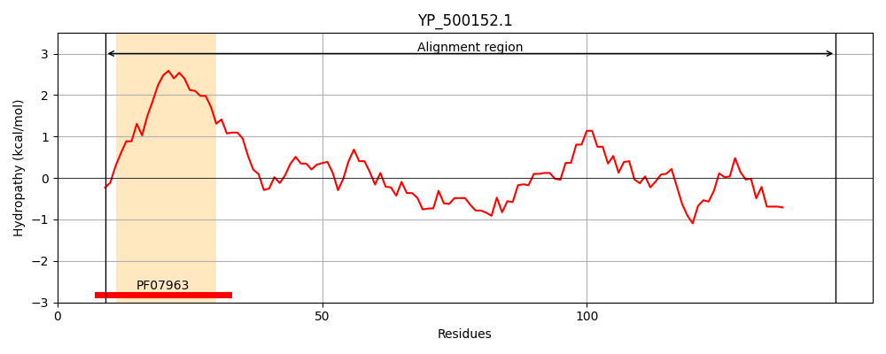
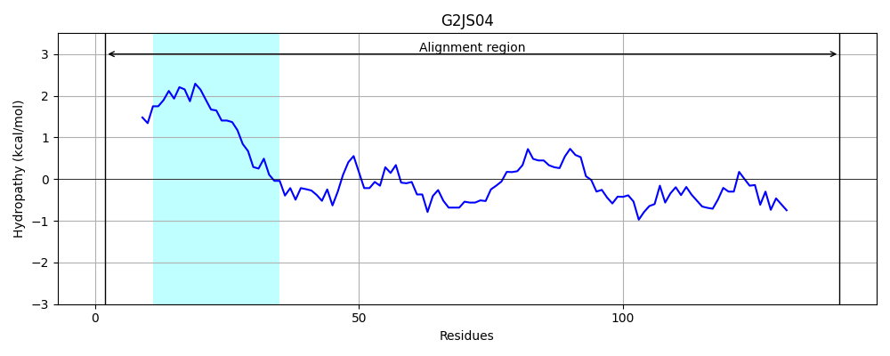
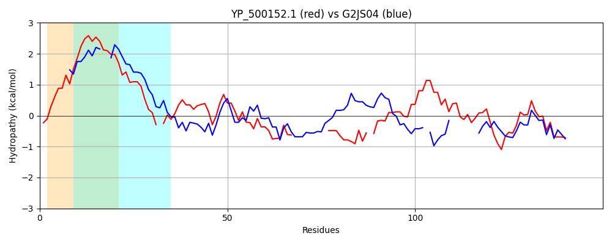

Hit Accession: G2JS04
Hit TCID: 3.A.14.1.2
Hit Description: gnl|BL_ORD_ID|4646 gnl|TC-DB|G2JS04|3.A.14.1.2 Late competence protein ComGD OS=Listeria monocytogenes J0161 GN=LMOG_00365 PE=4 SV=1
Mach Len: 150
e:0.000000
Query TMS Count : 1
Hit TMS Count: 1
TMS-Overlap Score: 0.650000
Predicted Substrates:CHEBI:8526;protein polypeptide chain
BLAST Alignment:
Score: 108 , Bit scores: 46 bits, E-value: 3.8e-07, Alignment length: 150, Percentage identity: 26
Query: 9 KQSAFTMIEMLVVMMLISIFLLLTMTSKGLSN-LRVIDDEANIISFITELNYIKSQAIANQGYINVRF---------YENSDTIKVIE-NNKIRFLKLKVGKIINVAKVDIIAFDKKGNINKFGSITIYNNNSIYRIIFHIEKGRIRYEK 147
K + FT++EML+V+ + F L+T+T +S+ L + ++ + + Y + A+A + F Y NS T+ +I + + + K+G + D G+IN+F +I + ++ + Y++IF I KGR R E+
Sbjct: 2 KINGFTLLEMLLVLTIS--FTLITLTIFPISSTLSTLREKQLLEEIKASIYYAQINAVATNQDTFISFDPTKNQLITYTNSKTLVIIPFSQTLTLTQPKIGNF-RFSSTD-------GSINRFSTIHLTSSTNNYKLIFQIGKGRFRIEQ 141 | Protein Hydropathy Plots: |
|---|
|  |  |
Pairwise Alignment-Hydropathy Plot:
|
|---|
|  |